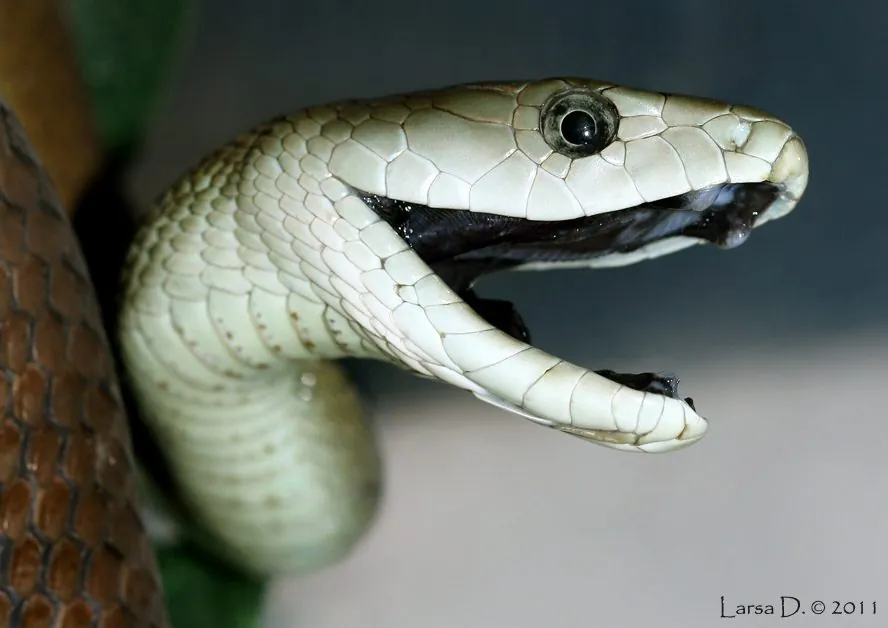

爬行动物 · 动物界
黑曼巴蛇 Dendroaspis polylepis

非洲体型最大的毒蛇之一，体长可达 4 米，攻击速度极快，毒液以神经毒素为主，被视为非洲最危险的蛇类。
- 分类
- 门脊索动物门纲爬行纲目有鳞目科眼镜蛇科属曼巴蛇属
- 栖息环境
- 非洲撒哈拉以南的稀树草原、灌丛和岩石丘陵
- 地理分布
- 非洲东部、南部及中部部分地区的开阔地带
- 保护级别
- IUCN 无危（LC）；非中国原产，在中国无保护级别
物种志
黑曼巴蛇体长 2.5–4.5 米，是非洲最长的毒蛇之一。它体色多为灰褐或橄榄褐，腹部灰白，口腔内部呈黑色，“黑曼巴”之名即来自其口腔；头部狭长，眼睛较大，身体细长而肌肉发达，能以约 16 km/h 的速度在地面短距离疾行。
它分布于撒哈拉以南非洲的稀树草原、灌丛与岩石地带，多在白天活动，常在树洞、废弃白蚁丘或岩石缝中休息。捕食时它会昂起前身、快速连续攻击，以小哺乳动物、鸟类和蜥蜴为食。雌蛇每窝产卵 6–17 枚，孵化期约 80–90 天，幼蛇出壳即可独立捕食。其毒液含强效神经毒素，被咬后若不及时使用抗蛇毒血清可致命；不过它遇人多会迅速逃离，主动攻击较少。
形态与习性
- 食性小型哺乳动物、鸟类、蜥蜴及蛇类
- 体长2.5–4.5 m，最长记录约 4.5 m
- 速度地面短距离冲刺时速可达 16 km
- 寿命约 11–20 年
- 繁殖卵生，每窝 6–17 枚，孵化期 80–90 天
- 毒性神经毒素为主，被咬可致呼吸麻痹，需立即就医
- 活动节律昼行性
趣味知识
- “黑曼巴”并非全身黑色，名字来自它漆黑的口腔内壁。
- 它受到威胁时会抬起前身并张开黑色口腔发出警告。
- 黑曼巴是非洲移动最快的蛇类之一，但耐力有限，只能短距离冲刺。